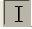
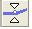
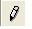

2.3.2. Selección
La barra de herramientas de selección consta de seis herramientas o iconos: Selección, envolvente, dibujo, zoom, traslado de tiempo y multifunción.
Estos botones permiten seleccionar un fragmento, una pista, todas las pistas, modificar la onda del archivo, acercar o alejar la onda, mover una selección, entre otros aspectos
|  |
Esta es la principal herramienta que utilizas para seleccionar audio en el tiempo. Haz clic en una pista para ubicar el cursor, o haz clic y arrastrala para seleccionar un rango de audio. Si la arrastras de una pista a otra, puedes seleccionar múltiples pistas. Extiende una selección a un nuevo punto en la pista haciendo clic mientras mantienes presionada la tecla mayúsculas (SHIFT). |
 |
La herramienta envolvente te da control detallado del fade (nivel de volumen) directamente en la ventana de la pista. Cuando la herramienta envolvente es seleccionada, la envoltura de amplitud de cada pista es resaltada en una línea, con puntos de control al principio y al fin de cada pista. Para cambiar un punto de control, hazle clic y arrástralo a una nueva posición. Para añadir un nuevo punto, haz clic en cualquier parte de la pista donde no haya un punto de control. Para remover un punto, haz clic en él y arrástralo fuera de la pista hasta que desaparezca, entonces suéltalo. |
|  |
La herramienta de dibujo permite modificar los datos individuales del audio digital. Estos datos se observan haciendo un zoom con la siguiente herramienta. |
 |
Esta herramienta te permite acercarte o alejarte de una parte específica del audio. Para acercarte, haz clic en cualquier parte del audio. Para alejarte, haz clic en el botón derecho del ratón o presiona mayúsculas - botón derecho. Adicionalmente, puedes acercarte a una región cliqueando y arrastrando el ratón para resaltar la región que quieres ver, y luego liberando el botón del ratón. |
|
Esta herramienta te permite cambiar la posición relativa de las pistas en relación una con otra en el tiempo. Para usar esta herramienta, simplemente haz clic en la pista y arrástrala a la izquierda o la derecha. Para alinear dos pistas juntas o reubicar su desplazamiento de tiempo de nuevo a cero, utiliza los comandos Alinear Pistas o Alinear con cero (en el menú Proyecto). |
|
|
Para utilizar las cinco herramientas anteriores a la vez. Depende de donde se encuentre el cursor. |
Jo.R.C.A. 2004 - 2011

Edición de Audio y Video con Software Libre by José Ramón Cerdeira Alonso is licensed under a Creative Commons Reconocimiento-No comercial-Compartir bajo la misma licencia 3.0 España License